The following table contains the model parameters for the JFET model.
| Name | Symbol | Description | Unit | Default |
| Vt0 | zero -bias threshold voltage | 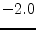 | ||
| Beta | transconductance parameter |
|
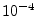 | |
| Lambda | 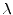 | channel-length modulation parameter | ||
| Rd | 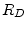 | drain ohmic resistance | ||
| Rs | source ohmic resistance | |||
| Is | gate-junction saturation current | 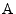 | ||
| N | gate P-N emission coefficient | |||
| Isr | 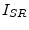 | gate-junction recombination current parameter | ||
| Nr | Isr emission coefficient | 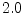 | ||
| Cgs | 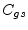 | zero-bias gate-source junction capacitance | 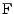 | |
| Cgd | 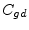 | zero-bias gate-drain junction capacitance | ||
| Pb | 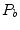 | gate-junction potential | ||
| Fc | forward-bias junction capacitance coefficient | |||
| M | 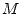 | gate P-N grading coefficient | ||
| Kf | flicker noise coefficient | |||
| Af | flicker noise exponent | |||
| Ffe | flicker noise frequency exponent | |||
| Temp | device temperature |
|
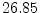 | |
| Xti | saturation current exponent | |||
| Vt0tc | 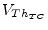 | Vt0 temperature coefficient | 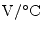 | |
| Betatce | 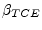 | Beta exponential temperature coefficient | 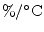 | |
| Tnom | temperature at which parameters were extracted |
|
||
| Area | default area for JFET |
The current equation of the gate source diode and its derivative writes as follows:
| 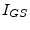 | 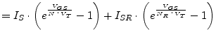 | (10.37) |
| 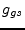 | 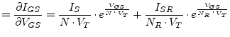 | (10.38) |
The current equation of the gate drain diode and its derivative writes as follows:
| 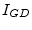 | (10.39) | |
| 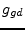 | 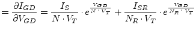 | (10.40) |
Both equations contain the gate-junction saturation current  ,
the gate P-N emission coefficient
,
the gate P-N emission coefficient  and the temperature voltage
and the temperature voltage
 with the Boltzmann's constant 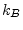 and the electron charge
with the Boltzmann's constant 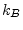 and the electron charge
 . The operating temperature
. The operating temperature  must be specified in Kelvin.
must be specified in Kelvin.
| 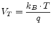 | (10.41) |
The controlled drain currents have been defined by Shichman and Hodges [13] for different modes of operations.
| 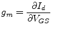 and 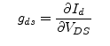 with 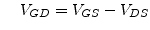 | (10.42) |
| 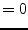 | (10.43) | |
| (10.44) | ||
| (10.45) | ||
|
normal mode, saturation region: 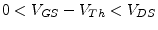
| ||
| 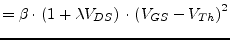 | (10.46) | |
| 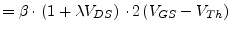 | (10.47) | |
| 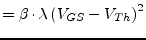 | (10.48) | |
|
normal mode, linear region:
| ||
| 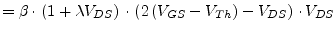 | (10.49) | |
| 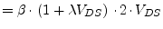 | (10.50) | |
| 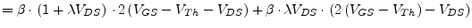 | (10.51) | |
| (10.52) | ||
| (10.53) | ||
| (10.54) | ||
|
inverse mode, saturation region: 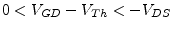
| ||
| 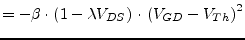 | (10.55) | |
| 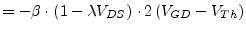 | (10.56) | |
| 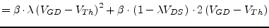 | (10.57) | |
|
inverse mode, linear region:
| ||
| 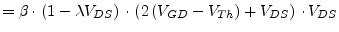 | (10.58) | |
| 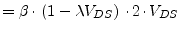 | (10.59) | |
| 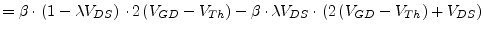 | (10.60) | |
The MNA matrix entries for the voltage controlled drain current source can be written as:
|
|
|
controlling nodes | |
|
D |
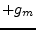 | 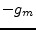 | |
|
S |
|||
|
controlled nodes |
With the accompanied DC model shown in fig. 10.7 using the
same principles as explained in section 3.3.1 on page
![[*]](crossref.png) it is possible to build the complete MNA matrix
of the intrinsic JFET.
it is possible to build the complete MNA matrix
of the intrinsic JFET.
Applying the rules for creating the MNA matrix of an arbitrary network the complete MNA matrix entries (admittance matrix and current vector) for the intrinsic junction FET are:
| (10.61) |
with
| (10.62) | ||
| (10.63) | ||
| (10.64) |
The small signal Y-parameter matrix of the intrinsic junction FET writes as follows. It can be converted to S-parameters.
| (10.65) |
with
| (10.66) | ||
| (10.67) | ||
| (10.68) |
The junction capacitances are modeled with the following equations.
| (10.69) | ||
| (10.70) |
Both the drain and source resistance  and
and  generate thermal
noise characterized by the following spectral density.
generate thermal
noise characterized by the following spectral density.
| (10.71) |
Channel noise and flicker noise generated by the DC transconductance
 and current flow from drain to source is characterized by the
following spectral density.
and current flow from drain to source is characterized by the
following spectral density.
 |
(10.72) |
The noise current correlation matrix (admittance representation) of the intrinsic junction FET can be expressed by
| (10.73) |
This matrix representation can be easily converted to the noise-wave
representation
 if the small signal S-parameter
matrix is known.
if the small signal S-parameter
matrix is known.
Temperature appears explicitly in the exponential terms of the JFET model equations. In addition, saturation current, gate-junction potential and zero-bias junction capacitances have built-in temperature dependence.
| (10.74) | ||
| (10.75) | ||
| (10.76) | ||
| (10.77) | ||
| (10.78) |
where the
 dependency has already been described in
section 10.2.4 on page . Also the
threshold voltage as well as the transconductance parameter have a
temperature dependence determined by
dependency has already been described in
section 10.2.4 on page . Also the
threshold voltage as well as the transconductance parameter have a
temperature dependence determined by
| (10.79) | ||
| (10.80) |
The area factor  used for the JFET model determines the number of
equivalent parallel devices of a specified model. The following
parameters are affected by the area factor.
used for the JFET model determines the number of
equivalent parallel devices of a specified model. The following
parameters are affected by the area factor.
| (10.81) | ||||
| (10.82) | ||||
| (10.83) |